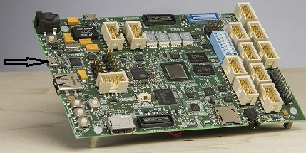
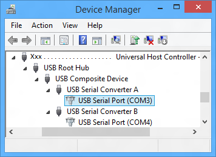

The Sharks Cove development board supports serial debugging over a USB cable.
This topic describes how to set up serial debugging over a USB cable manually. As an alternative to setting up manually, you can do the setup using Microsoft Visual Studio. For more information, see Setting Up Kernel-Mode Debugging using Serial over USB in Visual Studio.
The computer that runs the debugger is called the host computer, and the computer being debugged is called the target computer. In this topic, the Sharks Cove board is the target computer.
Setting up a Host Computer for debugging the Sharks Cove board
-
On the host computer, open Device Manager. On the View menu, choose Devices by Type.
-
On the Sharks Cove board, locate the debug connector. This is the micro USB connector shown in the following picture.

-
Use a USB 2.0 cable to connect the host computer to the debug connector on the Sharks cove board.
-
On the host computer, in Device Manager, two COM ports will get enumerated. Select the lowest numbered COM port. On the View menu, choose Devices by Connection. Verify that the COM port is listed under one of the USB host controllers.

Make a note of the COM port number. This is the lowest COM port number that shows under the USB host controller node. For example, in the preceding screen shot, the lowest COM port number under the USB host controller is COM3. You will need this COM port number later when you start a debugging session. If the driver is not already installed for the COM port, right click the COM port node, and choose Update Driver. Then select Search automatically for updated driver software. You will need an internet connection for this.
Setting Up the Sharks Cove Board as the Target Computer
-
On the target computer (Sharks Cove board), open a Command Prompt window as Administrator, and enter these commands:
- bcdedit /debug on
- bcdedit /dbgsettings serial debugport:1 baudrate:115200
- Reboot the target computer.
Starting the Debugging Session
Using WinDbg
On the host computer, open WinDbg. On the File menu, choose Kernel Debug. In the Kernel Debugging dialog box, open the COM tab. In the Baud rate box, enter 115200. In the Port box, enter COMn where n is the COM port number you noted previously. Click OK.
You can also start a session with WinDbg by entering the following command in a Command Prompt window; n is the number of the COM port that you noted on the host computer:
windbg -k com:port=COMn,baud=115200
Using KD
On the host computer, open a Command Prompt window, and enter the following command, where n is the COM port number you noted previously:
kd -k com:port=COMn,baud=115200
Using Environment Variables
On the host computer, you can use environment variables to specify the COM port and the baud rate. Then you do not have to specify the port and baud rate each time you start a debugging session. To use environment variables to specify the COM port and baud rate, open a Command Prompt window and enter the following commands, where n is the number COM port number you noted previously:
- set _NT_DEBUG_PORT=COMn
- set _NT_DEBUG_BAUD_RATE=115200
To start a debugging session, open a Command Prompt window, and enter one of the following commands:
- kd
- windbg
Troubleshooting Tips for Serial Debugging over a USB Cable
Specify correct COM port on both host and target
On the target computer (Sharks Cove board), verify that you are using COM1 for debugging. Open a Command Prompt window as Administrator, and enter bcdedit /dbgsettings. The output of bcdedit should show debugport 1.
On the host computer, specify the correct COM port when you start the debugger or when you set environment variables. This is the lowest numbered COM port that was enumerated under the USB host controller in Device Manager. For example, if COM3 is the desired port, use one of the following methods to specify the COM port.
- In WinDbg, in the Kernel Debugging dialog box, enter COM3 in the Port box.
- windbg -k com:port=COM3, ...
- kd -k com:port=COM3, ...
- set _NT_DEBUG_PORT=COM3
Baud rate must be the same on host and target
The baud rate must be 115200 on both the host and target computers.
On the target computer (Sharks Cove board), open a Command Prompt window as Administrator, and enter bcdedit /dbgsettings. The output of bcdedit should show baudrate 115200.
On the host computer, specify the correct baud rate when you start the debugger or when you set environment variables. Use one of the following methods to specify a baud rate of 115200.
- In WinDbg, in the Kernel Debugging dialog box, enter 115200 in the Baud rate box.
- windbg -k ..., baud=115200
- kd -k ..., baud=115200
- set _NT_DEBUG_BAUD_RATE=115200
Additional Information
For complete documentation of the bcdedit command, see Boot Options for Driver Testing and Debugging in the Windows Driver Kit (WDK) documentation.
Related topics